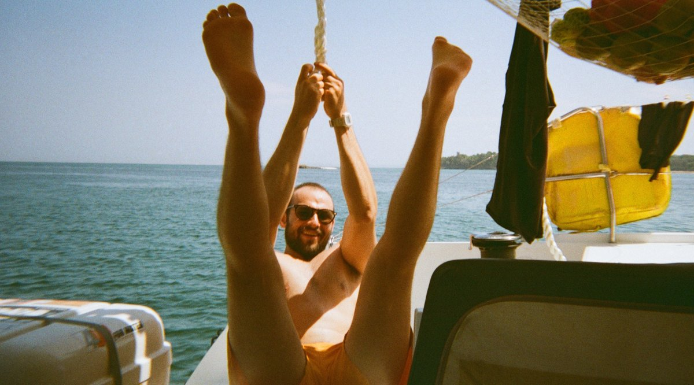

My name is Dan and I like computers. I am a software developer and reverse engineer, and I like to poke around at video games during my free time.
When not at my desk I am usually taking a leisurely stroll with a friend or podcast.
I spend a lot of time collecting songs that I like to live to and like to dance to.
I love the ocean and the self-reliant, tight-knit communities of sail boats. I crewed on a Pacific crossing in the spring of 2022 from Panama to French Polynesia. The picture above is of me testing out the strength of a rope I spliced.
I have a strong interest in community living and cohousing.
I am fascinated by games that blend the real, the virtual, and the imaginary. Some examples are ARGs, and meta-narratives that grow from system-driven games like Eve: Online or XCOM or even specific game servers.
I am blessed with loving family and friends, and I am overall having a good time.